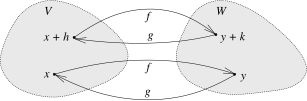

L8.5.1: C1 inverse theorem, open image, derivative formula and continuity.
Theorem8.5.1.Inverse function theorem.
Let U⊂Rn be an open set and let f:U→Rn be a continuously differentiable function. Suppose p∈U and f′(p) is invertible (that is, Jf(p)=0). Then there exist open sets V,W⊂Rn such that p∈V⊂U,f(V)=W, and f∣V is one-to-one. Hence a function g:W→V exists such that g(y):=(f∣V)−1(y). Furthermore, g is continuously differentiable and
g′(y)=(f′(x))−1,for all x∈V,y=f(x).
Proof.
Write A=f′(p). As f′ is continuous, there is an open ball V centered at p such that
A−f′(x)<2∥A−1∥1for all x∈V.
Consequently, the derivative f′(x) is invertible for all x∈V by Proposition 8.2.6.
Given y∈Rn, define φy:V→Rn by
φy(x):=x+A−1(y−f(x)).
As A−1 is one-to-one, φy(x)=x (x is a fixed point) if and only if y−f(x)=0, or in other words f(x)=y. Using the chain rule, we obtain
φy′(x)=I−A−1f′(x)=A−1(A−f′(x)).
So for x∈V, we have
φy′(x)≤∥A−1∥A−f′(x)<1/2.
As V is a ball, it is convex. Hence,
φy(x1)−φy(x2)≤21∥x1−x2∥for all x1,x2∈V.
In other words, φy is a contraction defined on V, though we so far do not know what is the range of φy. We cannot yet apply the fixed point theorem, but we can say that φy has at most one fixed point in V: If φy(x1)=x1 and φy(x2)=x2, then ∥x1−x2∥=φy(x1)−φy(x2)≤21∥x1−x2∥, so x1=x2. That is, there exists at most one x∈V such that f(x)=y, and so f∣V is one-to-one.
Let W:=f(V) and let g:W→V be the inverse of f∣V. We need to show that W is open. Take a y0∈W. There is a unique x0∈V such that f(x0)=y0. Let r>0 be small enough such that the closed ball C(x0,r)⊂V (such r>0 exists as V is open).
Suppose y is such that
∥y−y0∥<2∥A−1∥r.
If we show that y∈W, then we have shown that W is open. If x1∈C(x0,r), then
So φy takes C(x0,r) into B(x0,r)⊂C(x0,r). It is a contraction on C(x0,r) and C(x0,r) is complete (closed subset of Rn is complete). Apply the contraction mapping principle to obtain a fixed point x, i.e. φy(x)=x. That is, f(x)=y, and y∈f(C(x0,r))⊂f(V)=W. Therefore, W is open.
Next we need to show that g is continuously differentiable and compute its derivative. First, let us show that it is differentiable. Let y∈W and k∈Rn,k=0, such that y+k∈W. Because f∣V is a one-to-one and onto mapping of V onto W, there are unique x∈V and h∈Rn,h=0 and x+h∈V, such that f(x)=y and f(x+h)=y+k. In other words, g(y)=x and g(y+k)=x+h. See Figure 8.12.

Figure8.12.Proving that g is differentiable.
We can still squeeze some information from the fact that φy is a contraction.
φy(x+h)−φy(x)=h+A−1(f(x)−f(x+h))=h−A−1k.
So
∥h−A−1k∥=φy(x+h)−φy(x)≤21∥x+h−x∥=2∥h∥.
By the inverse triangle inequality, ∥h∥−∥A−1k∥≤21∥h∥. So
∥h∥≤2∥A−1k∥≤2∥A−1∥∥k∥.
In particular, as k goes to 0, so does h.
As x∈V, we find that f′(x) is invertible. Let B:=(f′(x))−1, which is what we think the derivative of g at y is. Then
As k goes to 0, so does h. So the right-hand side goes to 0 as f is differentiable, and hence the left-hand side also goes to 0. And B is precisely what we wanted g′(y) to be.
We have g is differentiable, let us show it is C1(W). The function g:W→V is continuous (it is differentiable), f′ is a continuous function from V to L(Rn), and X↦X−1 is a continuous function on the set of invertible operators. As g′(y)=(f′(g(y)))−1 is the composition of these three continuous functions, it is continuous.
L8.5.6: C1 implicit theorem on a genuine product neighbourhood, with P10.6 domain correction.
Theorem8.5.6.Implicit function theorem.
Let U⊂Rn+m be an open set and let f:U→Rm be a C1(U) mapping. Let (p,q)∈U be a point such that f(p,q)=0 and such that
∂(y1,…,ym)∂(f1,…,fm)(p,q)=0.
Then there exists an open set W⊂Rn with p∈W, an open set W′⊂Rm with q∈W′, where W×W′⊂U, and a C1(W) map g:W→W′, with g(p)=q, and for all x∈W, the point g(x) is the unique point in W′ such that
f(x,g(x))=0.
Furthermore, if A=[AxAy]=f′(p,q), then
g′(p)=−(Ay)−1Ax.
Proof.
Define F:U→Rn+m by F(x,y):=(x,f(x,y)). It is clear that F is C1, and we want to show that its derivative at (p,q) is invertible. Let us compute the derivative. The quotient
(h,k)f(p+h,q+k)−f(p,q)−Axh−Ayk
goes to zero as (h,k)=∥h∥2+∥k∥2 goes to zero. But then so does
So the derivative of F at (p,q) takes (h,k) to (h,Axh+Ayk). In block matrix form, it is [IAx0Ay]. If (h,Axh+Ayk)=(0,0), then h=0, and so Ayk=0. As Ay is one-to-one, k=0. Thus F′(p,q) is one-to-one, and hence invertible. We apply the inverse function theorem.
That is, there exists an open set V⊂Rn+m with F(p,q)=(p,0)∈V, and a C1 mapping G:V→Rn+m, such that F(G(x,s))=(x,s) for all (x,s)∈V,G is one-to-one, and G(V) is open. Write G=(G1,G2) (the first n and the next m components of G). Then
So x=G1(x,s) and f(G1(x,s),G2(x,s))=f(x,G2(x,s))=s. Plugging in s=0, we obtain
f(x,G2(x,0))=0.
As the set G(V) is open and (p,q)∈G(V), there exist some open sets W and W′ such that W×W′⊂G(V) with p∈W and q∈W′. Take W:={x∈W:G2(x,0)∈W′}. The function that takes x to G2(x,0) is continuous and therefore W is open. Define g:W→Rm by g(x):=G2(x,0), which is the g in the theorem. The fact that g(x) is the unique point in W′ follows because W×W′⊂G(V) and G is one-to-one.
Next, differentiate
x↦f(x,g(x))
at p, which is the zero map, so its derivative is zero. Using the chain rule,
0=A(h,g′(p)h)=Axh+Ayg′(p)h
for all h∈Rn, and we obtain the desired derivative for g.